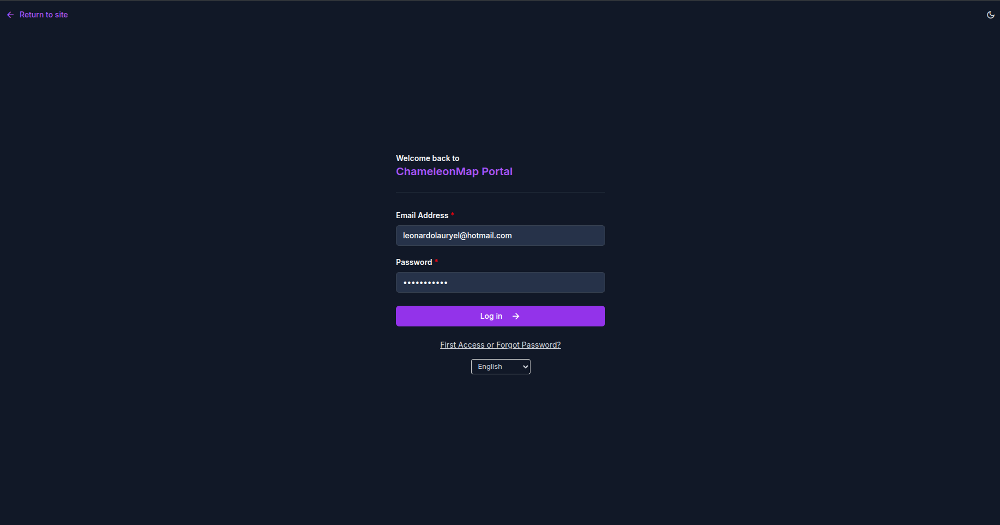
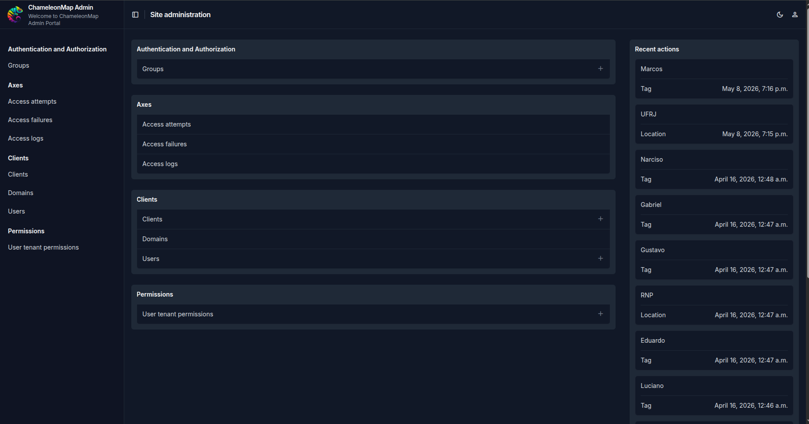
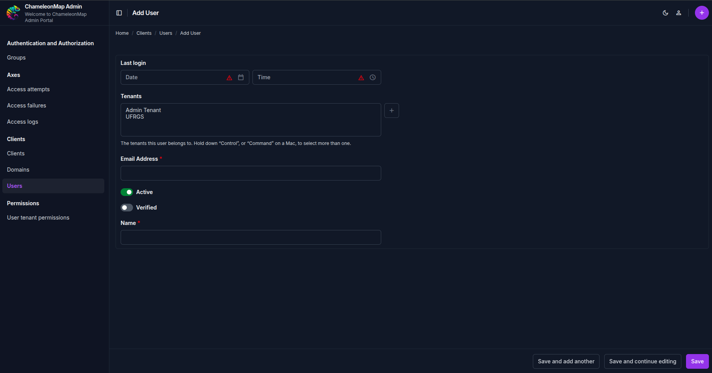
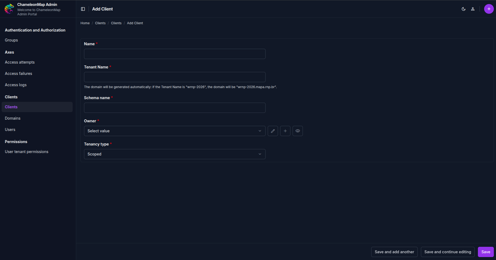
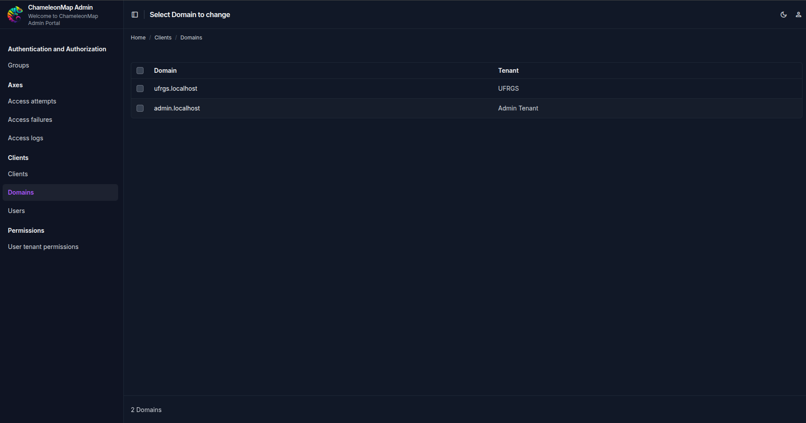

ChameleonMap supports a multi-tenant architecture, allowing multiple independent environments, called tenants, to be managed from a single installation. Each tenant has its own isolated workspace, including its users, data, and access URL.
Tenant management is performed through the ChameleonMap Administrative Portal. Authorized administrators can create new tenants, manage tenant users, and view the domains associated with each environment.
Administrative Portal: https://admin.mapa.rnp.br/
Open the Administrative Portal and authenticate using your administrator credentials. Only users with administrative privileges are authorized to create and manage tenants.

After authentication, the administrative dashboard is displayed. The sidebar provides access to tenant management features.
The following sections are used during tenant administration:

Creating a tenant consists of two sequential steps:
The tenant owner must exist before the tenant itself can be created.
Navigate to:
Clients > Tenant UsersClick the + button to create a new tenant user.

Complete the required information.
| Field | Description |
|---|---|
| Name | Full name of the user. |
| Email Address | Email address used for authentication and password setup. |
Additional fields may be configured according to your organization's requirements. When all required information has been entered, click Save.
Important: This user will be selected as the Owner of the tenant during the next step.
Navigate to:
Clients > ClientsClick the + button to create a new tenant.

Fill in all required fields.
| Field | Description |
|---|---|
| Name | Human-readable name of the organization or project. |
| Tenant Name | Unique tenant identifier. This value is used to automatically generate the tenant's domain. |
| Schema Name | Database schema that stores all tenant-specific data. |
| Owner | Select the Tenant User created in the previous step. |
| Tenancy Type | Type of tenant. In most deployments, the default value, Scoped, should be used. |
After completing the form, click Save. The tenant will be created immediately.
When a Client is created, ChameleonMap automatically creates a domain for the new tenant.
To view the generated domain, navigate to:
Clients > Domains
The generated URL can be shared with users who should access the tenant. For example:
https://wrnp-2026.mapa.rnp.brNo additional configuration is required after the tenant has been created.
After receiving the tenant URL, users access the environment with the email address registered by the administrator. Password creation and password reset are explained in the First Access and Password Reset section.
The following diagram summarizes the tenant creation process.
Verify that the Client was successfully created and check the Domains page to confirm that the domain has been generated.
Ensure that the Tenant User has been created and saved before creating the Client.
Verify that: